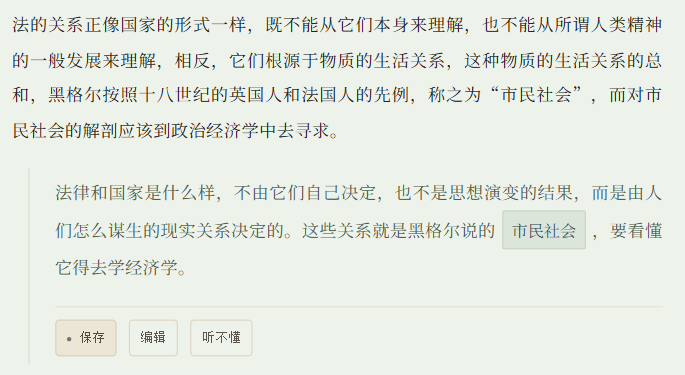
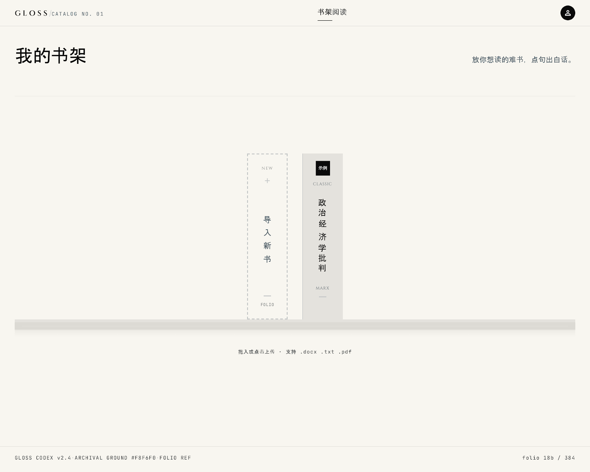

点一句读不懂的话，
就地把它讲成白话
读中文哲学书，最难的不是查不到，而是每查一次都要离开这一页。Gloss 把「选中 → 切出去 → 搜索 → 对照 → 切回来」压成一次点击。
- 角色
- 产品定义 · 规则设计 · 验收
- 时间
- 2026.08 — 至今
- 状态
- MVP版本已上线，持续迭代中
问题
问题不是 AI 做不到，是摩擦高到用户不愿意去做
我读专业课书籍时反复遇到同一件事：一句话读不懂，于是选中、切到浏览器、打开搜索、输入、在一堆结果里翻找、对照原文、再切回来。这一趟走完，刚才读到哪已经忘了。
而这件事的荒谬之处在于——AI 早就能把这句话讲明白。它不是能力问题，是摩擦问题。七步操作的成本，高到足以让人放弃一个本来很有价值的功能。
产品的全部价值，就是把七步压成一次点击。
这个判断定下来之后，后面所有的取舍都有了统一的尺子：任何增加阅读中断的设计，无论多有用，都不做。
证据
236 条批注：先证明这个问题真的存在
在写第一版 PRD 之前，我先把证据找出来。我在自己读的一本 docx 版《论斯宾诺莎的学说》里，从 2025 年 4 月 17 日到 23 日，陆续写了 236 条 Word 批注——全是读不懂的地方，以及我当时用大白话给自己解释的记录。
这 236 条批注的价值不在数量，在于它是一份没有为做产品而准备的原始材料。写批注的时候我并不知道自己为了要做一个阅读工具。
从批注到评测集
- 读取解析文档中我写的批注文字，还原「原句 + 我的批注」配对，锚定成功率 100%
- 从中挑出 20 句成分层评测集：混合难点 6 句 / 术语 5 句 / 句法 5 句 / 指代+句法 2 句 / 指代 2 句
- 批注只作为语气参考，不写进 prompt——避免模型直接抄我的答案
这份评测集后来成了整个项目的验收基准：每改一版改写规则，都拿它跑一遍。
竞品
三款竞品，六个维度，结论是「没有一个是阅读器」
我把可能替代 Gloss 的东西分成三类，用六个维度逐项对比。对比的目的不是证明它们差，而是找出它们各自解决不了、而我可以解决的那一格。
| 维度 | 微信读书AI问书功能 | ChatPDF类 | 划词翻译类 | Gloss |
|---|---|---|---|---|
| 阅读体验 | 最好 | 不是阅读器 | 寄生于原文 | 完整阅读器 |
| 交互 | 框选句子跳转问 | 离开正文去聊天 | 划词 | 点句撑开 |
| 输出 | 问答式回答 | 摘要 / 问答 | 词对词翻译 | 整句白话改写 |
| 术语边界 | 不区分 | 不区分 | 不适用 | 只保留承重概念 |
| 回原文核查 | 需返回 | 需返回 | 原句始终并排 | 原句始终并排 |
| 读完留下什么 | 标注/笔记 | 无 | 无 | 带白话/标注的文档 |
微信读书有最好的阅读体验，但摩擦还是很高；ChatPDF能读你的书，但它不是阅读器。
PRD v1.3 · 2.4 竞品与差异化Gloss 的位置由此确定：就地读就地问 + 只做减法 + 读完留下一份带白话的文档。
定位
用「永不做」划边界
我花了更多时间在「不做什么」上。功能收敛到两条核心：白话改写（点句子，给出整句白话）和就地整句理解（不离开正文）。
问答框 / 对话界面
ChatPDF 形态。看起来能力更强，但它会让阅读割裂——用户一旦进入对话，就离开了这本书。这与「一切服务于阅读的连贯性」这条统一原则直接冲突。
这条边界后来非常有用。每当我想加一个「看起来很聪明」的功能，只要它把用户拉出正文，答案就已经定了。
砍掉
三个被砍掉的功能，和它们的理由
PRD 从 v0.1 迭代到 v1.3，砍掉的东西比加进去的多。下面是三个我印象最深的。
「知识缺口标注」——四类输出砍成三类
原设想是让 AI 判断用户缺哪个前置概念，直接标出来。砍掉的理由是：产品无法判断用户是否具备前置知识，猜必然经常错。一个经常猜错的功能，比没有这个功能更伤害信任。
「标记待读」
和已有的缓存机制完全重叠。功能不是越多越好，重复的功能只是增加了维护成本和界面噪音。
「重复点击 = 质量信号」这个假设是错的
我原本以为用户反复点同一句，说明这句改写质量差。后来意识到：重复点击更可能是交互摩擦的信号——比如面板没撑开、位置不对。把行为归因错了，后面的迭代方向就会全错。
规则
把「什么算改好了」写成 AI 能执行的硬规则
「这句白话改得不好！」是主观感觉，模型执行不了。我做的事是把它翻译成三条可判定的硬规则。其中一条，最后推翻了我自己的初始设定。
规则一：长度上限
最初我定的是「白话长度应为原句的 50%–80%」，听起来很合理——白话嘛，应该更短。后来，我把这条废除了。
原因是：我拿评测集里 20 句做过一次统计，我自己写的批注与原句的长度比，中位数是 111%，最高到 220%。也就是说，这条规则会毙掉我一多半真实的批注。
读不懂源于密度，不是长度。所以规则改成：不超过 150 字的绝对上限。
PRD · F4 白话改写规则二：术语只留承重的
v0.3 写的是「术语一律保留」，太粗了——照这个执行，白话里会塞满没必要保留的学术词。后来细化为只保留承重概念：体系性概念保留（实体、样式、市民社会），文言词和普通学术词白话化（谵妄 → 神志不清）。拿不准的时候，看这个词是否在原文中反复出现。
规则三：预防AI幻觉
这是写进 prompt 原句的一条：
原句某一部分的意思你拿不准，就保留原句的说法，不要自己编一个听起来通顺的解释。
lib/prompts/gloss.ts · 生效版本 gloss-v9这条规则来自一个更早的发现：给模型一张替换词表，会失效；给它一套判断规则，才有效。词表只能覆盖我想到的情况，规则能覆盖我没想到的。

自检
我发现自己不够可靠，于是停掉了人工评测
这是我做这个项目里最重要的一次判断。
为了检验每个版本是不是真的变好了，我做逐句人工评测。为了检验这套评测本身是否可信，我加了一个对照组：把同一个版本的两份输出混在一起，看自己能不能判出一致的结果。
结果是：在 14 句可判别样本中，有 9 句被我判到了相反的一侧——分歧率约 64%。
我的判断精度，低于版本之间的真实差距。继续逐句人工评测，测出来的主要是我的噪音。
Gloss 交接报告 · 评测自检所以我主动终止了全量人工评测，转而依赖结构化评测集和更明确的判定规则。
同一批材料，还推翻了我另一个假设
- 「偏离原意」这一类错误，单看一版根本看不见——把三个版本并排之后，才暴露出 7/20 的偏离率。这直接推翻了我原先「漂移是我的改动引入的」这个假设。
- 有一版我用评测集里的 5 个词做示例，等于开卷考试，测出来的分数无效，作废重做。
- 更早的一次：「意识」这个词从 v5 开始就出现在评测集里，实际上已经泄题——它在评测集中出现 5 次，而在真实样本里出现 35 次。
边界
我知道这个产品的边界在哪
PRD 里有一节是专门用来标注「哪些结论站不住」的。
已知的三个不确定
用户样本不足；竞品覆盖率待验证；「长期阅读器」这个定位零数据支持。
我把这些写在 PRD 里而不是删掉，是因为一个不知道自己边界在哪的产品，迭代方向必然是随机的。
现状
已上线，持续迭代中
Gloss 目前MVP已上线，代码托管在GitHub，累计 75 次提交。
技术实现由 AI 编程助手完成（Next.js App Router + TypeScript，原生 CSS 变量，Vercel 部署）；我负责的部分是：问题定义、PRD 撰写与迭代、改写规则设计、评测集构建、任务拆解与验收。
